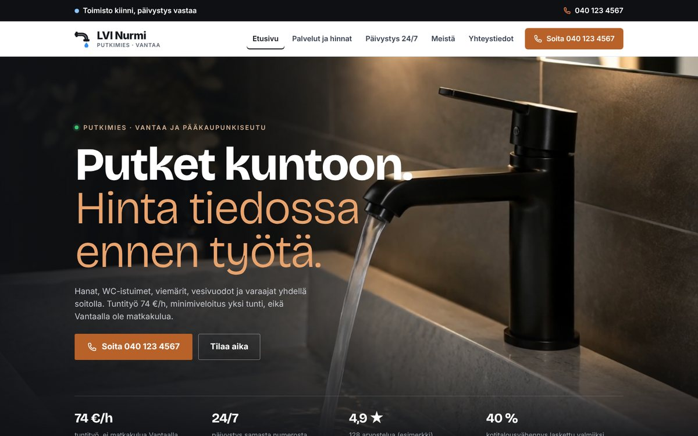

Konseptityö, kuvitteellinen asiakas
LVI Nurmi, Vantaa: viiden sivun kotisivut
Kotisivut kuvitteelliselle putkiliikkeelle. Hinnat näkyvät heti etusivulla, päivystyssivulla on ohjeet vesivahingon varalle, ja hintamittari näyttää, mitä tunti maksaa arkena, illalla ja yöllä. Puhelimella soittopainike on aina näkyvissä. Kuvat on tuotettu tekoälyllä esimerkkiä varten.
Avatkaa demosivu →